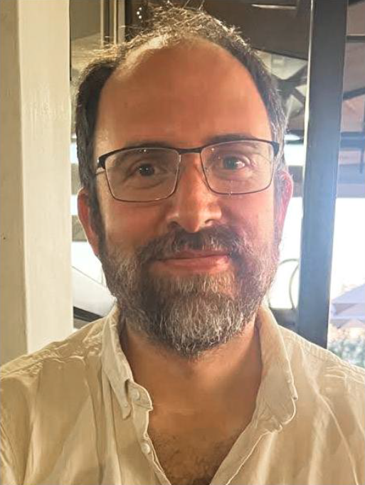
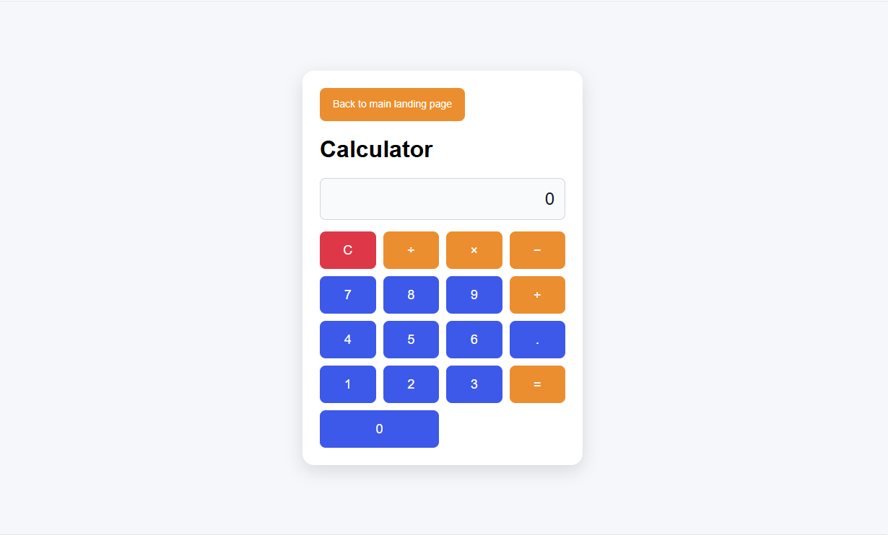

Welcome to Daniël's Portfolio
This is the landing page of my personal portfolio website as a Aspiring Web Content Developer / CMS Developer. Explore my projects, learn more about me, and feel free to get in touch!
Daniël de Villier Hugo
Web Content Developer / CMS Developer
About Me
I am a passionate Web Content Developer / CMS Developer with a strong foundation in frontend and a bit of backend technologies. I enjoy creating innovative simplistic solutions that can help people with day to day needs. I have also recently started using GitHub much more and make use of tools such as Gemini, GPT, and GitHub Copilot to help me develop code quickly and efficiently.

History
I’m a Web Content Developer and CMS Developer with a strong background in eLearning platforms, Moodle administration, technical support, and content management systems. My work focuses on building, maintaining, and improving digital learning spaces that are reliable, user-friendly, and easy for teams to manage.
My path started in technical support and academic IT environments, where I gained hands-on experience with computer labs, user support, equipment setup, training, and troubleshooting. Over time, that foundation grew into specialised work with Moodle, WordPress, OJS, Google Sites, HTML, CSS, reporting, and platform administration.
Outside of technology, I also have a background as a pilot, which shaped the way I approach my work: with attention to detail, clear communication, calm problem-solving, and a strong focus on procedures, safety, and reliability.
What I do
- Develop, update, and maintain content across CMS and eLearning platforms
- Administer and support Moodle, WordPress, OJS, and Google Sites environments
- Use HTML and CSS to improve page layouts, themes, and user experience
- Support course setup, content loading, platform configuration, and quality control
- Create SQL-based reports and platform insights for operational decision-making
- Provide clear technical support, documentation, and training for users and teams
Experience Highlights
- Senior eLearning Support Technician at AOSIS, supporting Moodle installations, CMS updates, training, reporting, troubleshooting, and platform improvements.
- Previous technical experience at Cape Peninsula University of Technology, including lab support, equipment maintenance, tutoring, conference setup, and user assistance.
- Hands-on experience with open-source platforms, technical documentation, content workflows, quality control, and client-facing support.
Tech & Tools
Moodle · WordPress · OJS · Google Sites · HTML · CSS · SQL reporting · GitHub · Gemini · GPT · GitHub Copilot · CMS administration · Content workflows · Technical support · Training · Quality control · Documentation
My Projects
Here are some of the projects I've worked on. Feel free to explore and see what I can do!
Project 1: Making a calculator
Developed a simple calculator application with a user-friendly interface.

Contact Me
Have a question or want to work together? Have a look at my LinkedIn profile and contact me on there or have a look at my github page. I'll get back to you as soon as possible!
LinkedIn: www.linkedin.com/in/daniëlhugo-67596179
GitHub: https://github.com/danilhugo
GitHub (portfolio): https://github.com/danilhugo/dhportfolio